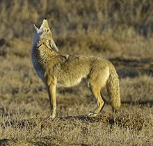

This is an animal that can be found at Shelby Farms. You are most likely to see one in one the many fields close to the edge of the woods. Sundown is a good time to see them as they are beginning to come out for the night. Other animals that can be seen while visiting the park include deer, foxes, herons, many different types of birds, snakes including cottonmouths and water snakes, garter snakes, king snakes, racers, box turtles, and more.
COYOTE